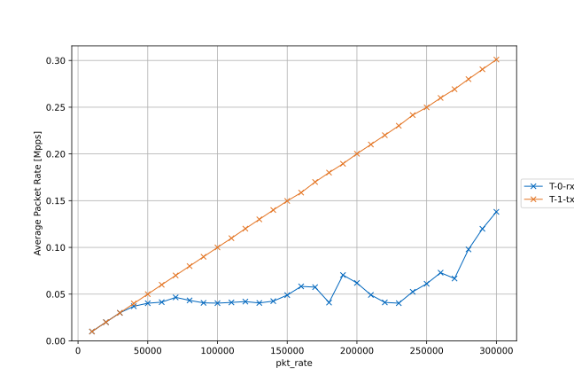

---
# front matter tells Jekyll to process Liquid
---
<!DOCTYPE html>
<html class=" js no-touch svg inlinesvg svgclippaths no-ie8compat" style="">
	{% include head.html %}
	<body class="homepage homepage_index">
		{% include header.html %}
		<main class="content container" role="main">
			<div class="content-row">
				{% include nav.html %}
				<article class="inner-content">
					<div class="inner-content">
						<h1 id="the-chair-of-br-network-architectures-and-services">Experiment 1</h1>
						<p></p>
<figure style="text-align:center;"><figcaption>figures/user_201012_112032_230471_pkt_sz-1500_loop_avg_mpps</figcaption></figure>
<figure style="text-align:center;"><figcaption>figures/user_201012_112032_230471_pkt_sz-1280_loop_avg_mpps</figcaption></figure>
<figure style="text-align:center;"><figcaption>figures/user_201012_112032_230471_pkt_sz-1024_loop_avg_mpps</figcaption></figure>
<figure style="text-align:center;"><figcaption>figures/user_201012_112032_230471_pkt_sz-512_loop_avg_mpps</figcaption></figure>
<figure style="text-align:center;"><figcaption>figures/user_201012_112032_230471_pkt_sz-256_loop_avg_mpps</figcaption></figure>
<figure style="text-align:center;"><figcaption>figures/user_201012_112032_230471_pkt_sz-128_loop_avg_mpps</figcaption></figure>
<figure style="text-align:center;"><figcaption>figures/user_201012_112032_230471_pkt_sz-64_loop_avg_mpps</figcaption></figure>
<p></p>
<h3>Git Repository</h3>
<p>All available experiment artifacts are publicly available in a <a href="https://github.com/gallenmu/pos-artifacts">git repository</a>.</p>
<details><summary>Git clone</summary><pre><code>git clone https://github.com/gallenmu/pos-artifacts /root/pos-artifacts</code></pre></details>
<p></p>
<h3>Experiment Setup</h3>
<p>The task of this script is the initialization and preparation of the experiment execution. It is executed on the management host.</p>
<details><summary>Experiment script</summary><pre><code>#!/bin/bash

# Setup of a simple experiment with two hosts involved.
#
# The hosts are allocated, rebooted, and the experiment scripts are deployed to the experiment
# hosts. The two experiment scripts just show how to deploy various variables to node scripts.
# Both experiment scripts create log files which are available on the current host after
# experiment execution.
#
# This script uses the loop mode of pos.
# There the experiment scripts are executed once for every possible combination of variables
# declared in the loop-variables.yml file.

if test "$#" -ne 2; then
	echo "Usage: setup.sh loadgen-experiment-node dut-experiment-node"
	exit
fi

echo "free hosts"
pos allocations free "$1"
pos allocations free "$2"

echo "allocate hosts"
pos allocations allocate "$1" "$2"

echo "set images to debian buster"
pos nodes image "$1" debian-buster
pos nodes image "$2" debian-buster

echo "load variables files"
pos allocations variables "$1" loadgen/variables.yml
pos allocations variables "$2" dut/variables.yml
# default (for all hosts) variables file
pos allocations variables "$1" global-variables.yml --as-global
# loop variables for experiment script
pos allocations variables "$1" loop-variables.yml --as-loop

echo "reboot experiment hosts..."
# run reset blocking in background and wait for processes to end before continuing
{ pos nodes reset "$1"; echo "$1 booted successfully"; } &
{ pos nodes reset "$2"; echo "$2 booted successfully"; } &
wait

echo "setup experiment hosts..."
{ pos commands launch --infile loadgen/setup.sh --blocking "$1"; } &
{ pos commands launch --infile dut/setup.sh --blocking "$2"; } &
wait

echo "execute experiment on hosts..."
{ pos commands launch --infile loadgen/measurement.sh --blocking --loop "$1"; } &
{ pos commands launch --infile dut/measurement.sh --blocking --loop "$2"; } &
wait

echo "free hosts"
pos allocations free "$1"
</code></pre></details>
<p></p>
<h3>Global and Loop Parameters</h3>
<p>List of parameters that were used for this instance of the experiment.</p>
<details><summary>Global parameters</summary><pre><code>{
    "dut_egress_if": "ens4",
    "dut_egress_ip": "10.0.0.21",
    "dut_egress_mac": "52:54:00:80:0a:21",
    "dut_ingress_if": "ens5",
    "dut_ingress_ip": "10.0.1.22",
    "dut_ingress_mac": "52:54:00:80:0a:22",
    "loadgen_egress_dev": 1,
    "loadgen_egress_if": "ens5",
    "loadgen_egress_ip": "10.0.1.23",
    "loadgen_egress_mac": "52:54:00:78:0a:20",
    "loadgen_enable_ip_sw_chksum_calc": 1,
    "loadgen_ingress_dev": 0,
    "loadgen_ingress_if": "ens4",
    "loadgen_ingress_ip": "10.0.0.20",
    "loadgen_ingress_mac": "52:54:00:78:0a:23",
    "moongen_dir": "/root/moongen",
    "moongen_repo": "https://github.com/gallenmu/MoonGen",
    "moongen_repo_commit": "e56bb072d8892e3d5c288dec5aa8e0540cc17eb8"
}</code></pre></details>
<details><summary>Loop parameters</summary><pre><code>{
    "pkt_rate": [
        10000,
        20000,
        30000,
        40000,
        50000,
        60000,
        70000,
        80000,
        90000,
        100000,
        110000,
        120000,
        130000,
        140000,
        150000,
        160000,
        170000,
        180000,
        190000,
        200000,
        210000,
        220000,
        230000,
        240000,
        250000,
        260000,
        270000,
        280000,
        290000,
        300000
    ],
    "pkt_sz": [
        64,
        128,
        256,
        512,
        1024,
        1280,
        1500
    ]
}</code></pre></details>
<p></p>
<h3>Load Generator</h3>
<p>The task of this node is the setup and execution of the load generator creating the load for the device under test.</p>
<details><summary>Local parameters</summary><pre><code>{
    "egress": 1,
    "ingress": 0,
    "warm_up": 0
}</code></pre></details>
<details><summary>Setup script</summary><pre><code>#!/bin/bash

# Script is run locally on experiment server.

# exit on error
set -e
# log every command
#set -x

MOONGEN_REPO=$(pos_get_variable moongen_repo --from-global)
MOONGEN_REPO_COMMIT=$(pos_get_variable moongen_repo_commit --from-global)
MOONGEN_DIR=$(pos_get_variable moongen_dir --from-global)

LOADGEN_INGRESS_IF=$(pos_get_variable --from-global loadgen_ingress_if)
LOADGEN_EGRESS_IF=$(pos_get_variable --from-global loadgen_egress_if)
LOADGEN_INGRESS_MAC=$(pos_get_variable --from-global loadgen_ingress_mac)
LOADGEN_EGRESS_MAC=$(pos_get_variable --from-global loadgen_egress_mac)
LOADGEN_INGRESS_IP=$(pos_get_variable --from-global loadgen_ingress_ip)
LOADGEN_EGRESS_IP=$(pos_get_variable --from-global loadgen_egress_ip)

#ip link set dev $LOADGEN_INGRESS_IF up
#ip link set dev $LOADGEN_EGRESS_IF up
#ip link set dev $LOADGEN_INGRESS_IF address $LOADGEN_INGRESS_MAC
#ip link set dev $LOADGEN_EGRESS_IF address $LOADGEN_EGRESS_MAC
#ip addr add $LOADGEN_INGRESS_IP/24  dev $LOADGEN_INGRESS_IF
#ip addr add $LOADGEN_EGRESS_IP/24 dev $LOADGEN_EGRESS_IF

apt-get update
git clone "$MOONGEN_REPO" "$MOONGEN_DIR"
cd "$MOONGEN_DIR"
git checkout "$MOONGEN_REPO_COMMIT"
"$MOONGEN_DIR"/build.sh
"$MOONGEN_DIR"/bind-interfaces.sh
"$MOONGEN_DIR"/setup-hugetlbfs.sh

echo "setup successful"
</code></pre></details>
<details><summary>Measurement script</summary><pre><code>#!/bin/bash

# Script is run locally on experiment server.

# exit on error
set -e
# log every command
set -x

MOONGEN_DIR=$(pos_get_variable moongen_dir --from-global)
PKT_RATE=$(pos_get_variable pkt_rate --from-loop)
PKT_SZ=$(pos_get_variable pkt_sz --from-loop)

LOADGEN_INGRESS_DEV=$(pos_get_variable --from-global loadgen_ingress_dev)
LOADGEN_EGRESS_DEV=$(pos_get_variable --from-global loadgen_egress_dev)
LOADGEN_INGRESS_IF=$(pos_get_variable --from-global loadgen_ingress_if)
LOADGEN_EGRESS_IF=$(pos_get_variable --from-global loadgen_egress_if)
LOADGEN_INGRESS_MAC=$(pos_get_variable --from-global loadgen_ingress_mac)
LOADGEN_EGRESS_MAC=$(pos_get_variable --from-global loadgen_egress_mac)
LOADGEN_INGRESS_IP=$(pos_get_variable --from-global loadgen_ingress_ip)
LOADGEN_EGRESS_IP=$(pos_get_variable --from-global loadgen_egress_ip)
LOADGEN_ENABLE_IP_SW_CHKSUM_CALC=$(pos_get_variable --from-global loadgen_enable_ip_sw_chksum_calc)

LOADGEN_WARM_UP=$(pos_get_variable warm_up)

DUT_INGRESS_MAC=$(pos_get_variable --from-global dut_ingress_mac)
DUT_EGRESS_MAC=$(pos_get_variable --from-global dut_egress_mac)
DUT_INGRESS_IP=$(pos_get_variable --from-global dut_ingress_ip)
DUT_EGRESS_IP=$(pos_get_variable --from-global dut_egress_ip)

PKTS_TOTAL=$(($PKT_RATE*30))

echo "send packets with size: $PKT_SZ and rate: $PKT_RATE."

pos_sync

pos_run --loop loadgen -- bash -c "$MOONGEN_DIR/build/MoonGen $MOONGEN_DIR/examples/soft-gen.lua --src-mac $LOADGEN_EGRESS_MAC --dst-mac $DUT_INGRESS_MAC --src-ip $LOADGEN_EGRESS_IP --dst-ip $LOADGEN_INGRESS_IP --fix-packetrate $PKT_RATE --size $PKT_SZ --packets $PKTS_TOTAL --ip-chksum $LOADGEN_ENABLE_IP_SW_CHKSUM_CALC --warm-up $LOADGEN_WARM_UP $LOADGEN_EGRESS_DEV $LOADGEN_INGRESS_DEV > /root/throughput.log"

sleep 50

pos_kill --loop loadgen

sleep 100

pos_upload --loop /root/throughput.log

sleep 5

pos_sync

echo "experiment successful"
</code></pre></details>
<p></p>
<h3>Device under Test</h3>
<p>The task of this node is the setup and execution of the investigated packet processing device.</p>
<details><summary>Local parameters</summary><pre><code>{
    "dummy": "null"
}</code></pre></details>
<details><summary>Setup script</summary><pre><code>#!/bin/bash

# Script is run locally on experiment server.

# exit on error
set -e
# log every command
#set -x

MOONGEN_REPO=$(pos_get_variable moongen_repo --from-global)
MOONGEN_REPO_COMMIT=$(pos_get_variable moongen_repo_commit --from-global)
MOONGEN_DIR=$(pos_get_variable moongen_dir --from-global)

LOADGEN_INGRESS_IF=$(pos_get_variable --from-global loadgen_ingress_if)
LOADGEN_EGRESS_IF=$(pos_get_variable --from-global loadgen_egress_if)
LOADGEN_INGRESS_MAC=$(pos_get_variable --from-global loadgen_ingress_mac)
LOADGEN_EGRESS_MAC=$(pos_get_variable --from-global loadgen_egress_mac)
LOADGEN_INGRESS_IP=$(pos_get_variable --from-global loadgen_ingress_ip)
LOADGEN_EGRESS_IP=$(pos_get_variable --from-global loadgen_egress_ip)

#ip link set dev $LOADGEN_INGRESS_IF up
#ip link set dev $LOADGEN_EGRESS_IF up
#ip link set dev $LOADGEN_INGRESS_IF address $LOADGEN_INGRESS_MAC
#ip link set dev $LOADGEN_EGRESS_IF address $LOADGEN_EGRESS_MAC
#ip addr add $LOADGEN_INGRESS_IP/24  dev $LOADGEN_INGRESS_IF
#ip addr add $LOADGEN_EGRESS_IP/24 dev $LOADGEN_EGRESS_IF

apt-get update
git clone "$MOONGEN_REPO" "$MOONGEN_DIR"
cd "$MOONGEN_DIR"
git checkout "$MOONGEN_REPO_COMMIT"
"$MOONGEN_DIR"/build.sh
"$MOONGEN_DIR"/bind-interfaces.sh
"$MOONGEN_DIR"/setup-hugetlbfs.sh

echo "setup successful"
</code></pre></details>
<details><summary>Measurement script</summary><pre><code>#!/bin/bash

# Script is run locally on experiment server.

# exit on error
set -e
# # log every command
set -x

PKT_RATE=$(pos_get_variable pkt_rate --from-loop)
PKT_SZ=$(pos_get_variable pkt_sz --from-loop)

echo "forward packets with size: $PKT_SZ and rate: $PKT_RATE."

pos_sync

sleep 1

pos_sync

echo "experiment successful"
</code></pre></details>
<p></p>
<h3>Evaluation</h3>
<p>The evaluation script that plots the results.</p>
<details><summary>Evaluation script call</summary><pre><code>cd /root/pos-artifacts
 python3 /root/pos-artifacts/plot_scripts/plot_throughput.py '' /root/pos-artifacts/results/2020-10-12_11-20-32_230471/vriga --label T --name user_201012_112032_230471 --throughput-filename throughput_run*.log --throughput-strip 2 --metric avg_mpps --loop-filename *_unknown_run*.loop --loop-order pkt_sz --loop-order pkt_rate --additional-export svg</code></pre></details>
<p></p>
<h3>Publication</h3>
<p>The publication script that created this website.</p>
<details><summary>Publication script call</summary><pre><code>cd /root/pos-artifacts
 python3 /root/pos-artifacts/publish.py -x /root/pos-artifacts/experiment -r /root/pos-artifacts/results/2020-10-07_23-22-39_868017 -r /root/pos-artifacts/results/2020-10-12_11-20-32_230471 -g https://github.com/gallenmu/pos-artifacts</code></pre></details>

						<!--

						<h3>Setup</h3>
						<p>
						<details>
							<summary>Setup loadgen</summary>
							{% include loadgen_setup.html %}
						</details>
						</p>
						-->

					</div>
				</article>
			</div>
		</main>
		{% include footer.html %}
	</body></html>
